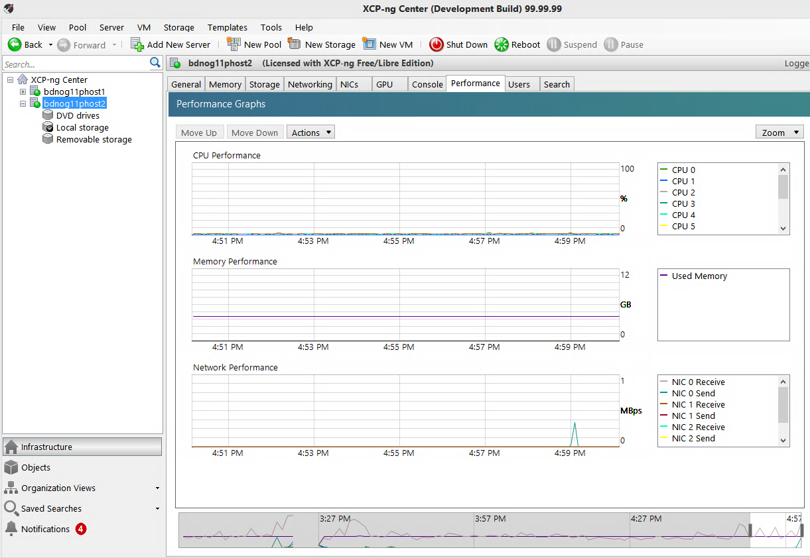

{ FreeRADIUS3 Installation &
Configuration }
__By Muhammad Rezaul
Karim (Fiber@Home) _First Version-0.1 _Drafted on : February
27, 2020
☐ #### Install & Configure
FreeRADIOUS3+MySQL+daloRADIUS # Ubuntu-20.04.X #
// Recommended System Requirements for
Practical Lab //
⇒ Ubuntu 20.04
VM/LXC Container
⇒ 4GB RAM
⇒ 4 Core CPU ( Intel or AMD Based)
⇒ Wired (Broadband) Internet connection with decent speed.
⇒ 1 ipv4 (Public) & 1 ipv6 IP
⇒ APACHE2, PHP, MySQL/MariaDB, FreeRADIOUS (Version 3)
⇒ Sufficient time with sincere mind and passion to learn including
working knowledge of Linux.
// Working Steps //
☐ Install Ubuntu 20.04
☐ Put IP address and make sure you are getting Internet connection.
☐ Install & Configure APACHE, PHP, MySQL
☐ Install & Configure FreeRADIUS3
☐ Create Users in RADIUS
☐ Authenticate Users by Using FreeRADIUS.
>> Here, we suppose our Installation of OS is complete
and we have the following information:-
IP Address : 172.16.208.186
Login User ID : root
Login Password : YourSuperSecretPassword
>> OK, Let's Login into the Server and Start Working...
ping google.com # making sure that, the server is connected to the Internet
sudo apt update -y
sudo apt upgrade -y
>> Install APACHE2 WebServer & PHP7.4
sudo apt install
software-properties-common ca-certificates lsb-release
apt-transport-https
LC_ALL=C.UTF-8 add-apt-repository
ppa:ondrej/php
sudo apt update
sudo apt -y
install apache2 libapache2-mod-php7.4 php
php7.4-{gd,common,mysql,mbstring,xml,curl}
sudo apt install php7.4-fpm
php7.4-common php7.4-mysql php7.4-xml php7.4-xmlrpc
php7.4-curl php7.4-gd php7.4-imagick php7.4-cli php7.4-dev
php7.4-imap php7.4-mbstring php7.4-soap php7.4-zip
php7.4-bcmath -y
// Storage
Disk/Volume Configuration (ZFS+NFS) //
>> We will
configure our Virtual Machines (Guest OS) storage in a separate Hard
Disk using ZFS (Zetabyte File System) which will help us to take
snapshots and replicate the storage to another Hardware
(Workstaion/Server) for backup and redundancy.
sudo yum install zfs nfs-utils
sudo depmod -a
modprobe zfs
sudo vim /etc/sparse_dd.conf
unbuffered = false
echo 10 > /sys/module/zfs/parameters/zfs_txg_timeout
echo 3221225472 >> /sys/module/zfs/parameters/zfs_arc_max // Allocating 3GB of RAM For ZFS Cache
// 1073741824 = 1GB
## 3GB (Total RAM 12GB, assigining 2GB for zfs cache) | adjust (~25%) your RAM accourding to your server's total RAM
echo "options zfs zfs_arc_max=3221225472" > /etc/modprobe.d/zfs.conf
sudo vim /etc/rc.local
echo 10 > /sys/module/zfs/parameters/zfs_txg_timeout
echo 3221225472 >> /sys/module/zfs/parameters/zfs_arc_max
ulimit -n 102400
chmod +x /etc/rc.local
sudo systemctl reboot
// ZFS Pool Creation
& Configuration //
>> Now we will
identify the Storage Disk ID and will create ZFS pool (volume)
sudo fdisk -l |grep dev |grep sd*
# *** Command Output ***
Disk /dev/sda: 3000.6 GB, 3000592982016 bytes, 5860533168 sectors // Our Hypervisor OS disk
Disk /dev/sdb: 2000.4 GB, 2000398934016 bytes, 3907029168 sectors // Our Targated Data disk 1
Disk /dev/sdc: 4000.8 GB, 4000787030016 bytes, 7814037168 sectors // Our Targated Data disk 2
### Initializing Data Disks (Will destroy all existing data)
sgdisk --zap-all /dev/sdb
sgdisk --zap-all /dev/sdc
### Finding the disk-ids
ls -la /dev/disk/by-id/ |grep sdb //
# *** Command Output ***
lrwxrwxrwx 1 root root 9 Feb 29 15:43 ata-WDC_WD20EZRZ-00Z5HB0_WD-WCC4N1CPUSRH -> ../../sdb
lrwxrwxrwx 1 root root 9 Feb 29 15:43 wwn-0x50014ee20dbc68d5 -> ../../sdb
ls -la /dev/disk/by-id/ |grep sdc //
# *** Command Output ***
lrwxrwxrwx 1 root root 9 Feb 29 15:43 ata-WDC_WD40PURX-64N96Y0_WD-WCC7K1NYPAYF -> ../../sdc
lrwxrwxrwx 1 root root 9 Feb 29 15:43 wwn-0x50014ee265c762e8 -> ../../sdc
### Creating the ZFS mirrored (Like RAID#1) pool
zpool create -o ashift=12 -f vol1 mirror ata-WDC_WD20EZRZ-00Z5HB0_WD-WCC4N1CPUSRH ata-WDC_WD40PURX-64N96Y0_WD-WCC7K1NYPAYF
zpool status
zpool list
zfs list
// NFS Server
Configuration //
>> We will
configure NFS-Server Storage Repository for XCP-NG to Access
Mirrored Data Pool
zfs create vol1/node2nfs4sr1
zfs create vol1/iso
zfs set sync=disabled vol1/node2nfs4sr1
zfs set compress=lz4 vol1/node2nfs4sr1
zfs set atime=off vol1/node2nfs4sr1
zfs set sync=disabled vol1/iso
zfs set compress=lz4 vol1/iso
zfs set atime=off vol1/iso
# *NFS LOCAL SERVER | WHY NOT LOCAL MOUNT - There is some issues regarding zfs storage with xcp-ng storage-repository pool
yum install nfs-utils nfs4-acl-tools portmap
#NFSv4 for main storage
chmod -R 755 /vol1/node2nfs4sr1
chmod -R 777 /vol1/node2nfs4sr1/
chown nfsnobody:nfsnobody /vol1/node2nfs4sr1
#NFSv3 for ISO storage
chmod -R 755 /vol1/iso
chmod -R 777 /vol1/iso/
chown nfsnobody:nfsnobody /vol1/iso
#NFSv4 for main storage
zfs set sharenfs=on vol1/node2nfs4sr1
#NFSv3 for ISO storage
zfs set sharenfs=on vol1/iso
### Starting/ReStarting Services
systemctl enable rpcbind
systemctl enable nfs-server
systemctl enable nfs-lock
systemctl enable nfs-idmap
systemctl start rpcbind
systemctl start nfs-server
systemctl start nfs-lock
systemctl start nfs-idmap
systemctl daemon-reload
### Configure NFS Exports Locations
sudo vim /etc/exports
#NFSv4
/vol1/node2nfs4sr1 127.0.0.1/32(rw,fsid=0,insecure,no_subtree_check,async)
#NFSv3
/vol1/iso 127.0.0.1/32(rw,insecure,no_subtree_check,async)
#A little tuning
sudo vim /etc/sysconfig/nfs
RPCNFSDCOUNT=16
### Starting/ReStarting NFS Services
systemctl restart rpcbind
systemctl restart nfs-server
systemctl restart nfs-lock
systemctl restart nfs-idmap
systemctl daemon-reload
#Cheking the exports
exportfs -r
exportfs
### Stopping Commands of NFS Server
systemctl stop rpcbind
systemctl stop nfs-server
systemctl stop nfs-lock
systemctl stop nfs-idmap
// NFS Configuration
Testing & Validation //
>> Mounting and
Testing NFS
yum install nfs-utils nfs4-acl-tools portmap
systemctl start rpcbind nfs-idmap
systemctl enable rpcbind nfs-idmap
#NFSv4
mkdir -p /mnt/node2nfs4sr1
#NFSv3
mkdir -p /mnt/iso
#NFSv4
mount -t nfs4 127.0.0.1:/ /mnt/node2nfs4sr1
#NFSv3
mount -t nfs 127.0.0.1:/vol1/iso /mnt/iso
df -kh
mount | grep nfs
df -hT
# General Performance Check
dd if=/dev/zero of=/mnt/node2nfs4sr1/file1.out bs=1M count=10k
dd if=/dev/zero of=/mnt/iso/file1.out bs=1M count=10k
umount /mnt/node2nfs4sr1
umount /mnt/iso
umount -l /mnt/node2nfs4sr1 ; if mount-point hang
umount -l /mnt/iso ; if mount-point hang
systemctl stop rpcbind nfs-idmap
// INSTALL XCP-NG-CENTER-GUI //
<< Follow Video
Tutorial >>
// NFS MOUNT VIA XCP-NG-CENTER-GUI //
<< Follow Video Tutorial >>
// UPLOADING ISO TO THE ISO REPOSITORY //
<< Follow Video Tutorial >>
yum install -y proftpd openssl proftpd-utils
systemctl start proftpd.service
systemctl enable proftpd.service
groupadd ftpgroup
useradd -G ftpgroup iso -s /sbin/nologin -d /vol1/node2nfs4sr1/iso
passwd iso
chmod -R 1750 /vol1/node2nfs4sr1/iso
// CREATE SOME VM USING XCP-NG-CENTER-GUI
//
<< Follow Video Tutorial >>

// POST-INSTALLTION WORKS //
sudo xe pool-list
sudo xe pool-param-set uuid=UUID other-config:auto_poweron=true
sudo xe vm-list
sudo xe vm-param-set uuid=UUID other-config:auto_poweron=true
sudo xe host-list
sudo xe pool-list
sudo xe pool-param-set uuid=503222ae-2181-2aaf-b7a5-7326ca7c203d other-config:auto_poweron=true
sudo xe vm-list
sudo xe vm-param-set uuid=72e3d8c9-527f-803c-5e18-9648758236a4 other-config:auto_poweron=true
sudo xe vm-param-set uuid=72e3d8c9-527f-803c-5e18-9648758236a4 platform:exp-nested-hvm=true
// PERFORMANCE TUNING OF THE SYSTEMS &
SOME EXTRA COMMANDS //
<< Follow Video Tutorial >>
echo 65536 > /proc/sys/net/core/rmem_default
echo 65536 > /proc/sys/net/core/rmem_max
############# Network Tweek
xe vif-param-set uuid=<vif_uuid> other-config:mtu=9000
xe pif-plug uuid=83750d2d-dd36-787c-da1c-951d7afc2cf0
xe pif-list to see the new PIF
ovs-vsctl set int xenbr0 mtu_request=9000
ip link set eth1 mtu 9000
xe pbd-unplug uuid=pbd_uuid
xe sr-destroy uuid=sr_uuid
xe sr-forget uuid=sr_uuid
xe pbd-list
xe pbd-plug uuid=pbd_uuid
############# Shutdown Script
vim /usr/bin/XShutdown.sh
# Custom Shutdown Script
xe pbd-unplug uuid=a2328c1e-9a2a-324c-3411-17c8f59cc9c2
xe pbd-unplug uuid=a2328c1e-9a2a-324c-3411-17c8f59cc9c2
poweroff
Save+Exit
########## /etc/sysctl.conf
fs.file-max = 2097152
net.ipv4.tcp_max_orphans = 60000
net.ipv4.tcp_no_metrics_save = 1
net.ipv4.tcp_window_scaling = 1
net.ipv4.tcp_timestamps = 1
net.ipv4.tcp_sack = 1
net.ipv4.tcp_max_syn_backlog = 10240
net.ipv4.tcp_congestion_control=htcp
net.ipv4.tcp_mtu_probing=1
net.ipv4.tcp_synack_retries = 2
net.ipv4.ip_local_port_range = 1024 65535
net.ipv4.tcp_rfc1337 = 1
net.ipv4.tcp_fin_timeout = 15
net.core.somaxconn = 1024
net.core.netdev_max_backlog = 65536
net.core.optmem_max = 25165824
net.ipv4.tcp_mem = 65536 131072 262144
net.ipv4.udp_mem = 65536 131072 262144
net.core.rmem_default = 25165824
net.core.rmem_max = 25165824
net.ipv4.tcp_rmem = 20480 12582912 25165824
net.ipv4.udp_rmem_min = 16384
net.core.wmem_default = 25165824
net.core.wmem_max = 25165824
net.ipv4.tcp_wmem = 20480 12582912 25165824
net.ipv4.udp_wmem_min = 16384
net.ipv4.tcp_max_tw_buckets = 1440000
net.ipv4.tcp_tw_reuse = 1
#
kernel.sched_min_granularity_ns = 10000000
kernel.sched_wakeup_granularity_ns = 15000000
vm.dirty_ratio = 40
vm.dirty_background_ratio = 10
vm.swappiness=10
######## /etc/rc.local
echo 10 > /sys/module/zfs/parameters/zfs_txg_timeout
echo 3221225472 >> /sys/module/zfs/parameters/zfs_arc_max
ulimit -n 102400
*** Finally Reboot Your
Server and Check Functionality After Reboot ***